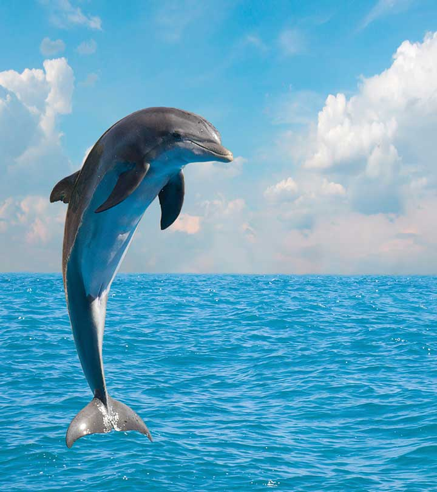

Float and Clear example
Dolphins

A dolphin is an aquatic mammal within the infraorder Cetacea. Dolphin species belong to the families
Delphinidae (the oceanic dolphins), Platanistidae (the Indian river dolphins), Iniidae (the New World river
dolphins), Pontoporiidae (the brackish dolphins), and possibly extinct Lipotidae (baiji or Chinese river
dolphin). There are 40 extant species named as dolphins.Dolphins range in size from the 1.7-metre-long (5 ft 7
in) and 50-kilogram (110-pound) Maui's dolphin to the 9.5 m (31 ft) and 10-tonne (11-short-ton) orca. Various
species of dolphins exhibit sexual dimorphism where the males are larger than females. They have streamlined
bodies and two limbs that are modified into flippers. Though not quite as flexible as seals, they are faster;
some dolphins can briefly travel at speeds of 29 kilometres per hour (18 mph) or leap about 9 metres (30 ft).
Dolphins use their conical teeth to capture fast-moving prey.